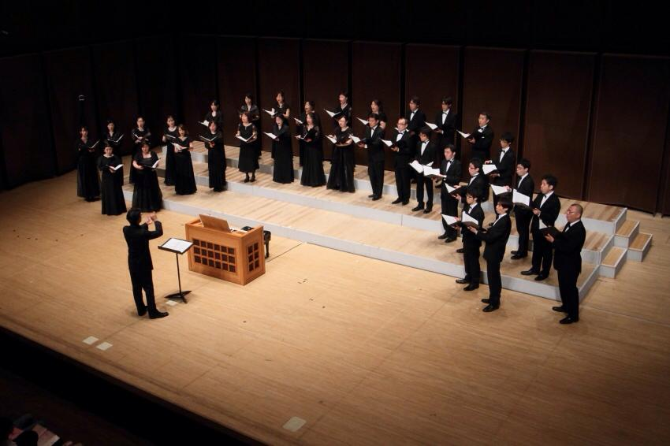
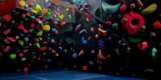

趣味
合唱
何歳から始めたのか正確には覚えていませんが、おそらく今年で合唱歴20年目くらいです。5才（多分）〜18才は鎌倉にある少年合唱団で歌って、19才〜今までは社会人の合唱団で歌っています。毎年5~10回くらい演奏会があったり、全日本のコンクールで毎回金賞をとるくらいにはがっつりやっているので、趣味というとちょっと違和感があります（笑）
ボルダリング
社会人になってから初めてもうすぐ2年、週2~3回ボルダリングジムに通っています。シーズンになったら外にもたまに登りに行きます。つい先日初めてアマチュアの大会にもでました。前職でボルダリング部を2→10名まで増やしたので、プレイドでもいつかボルダリング部を作るというプチ野望があります。